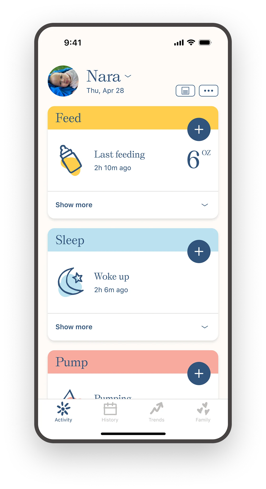
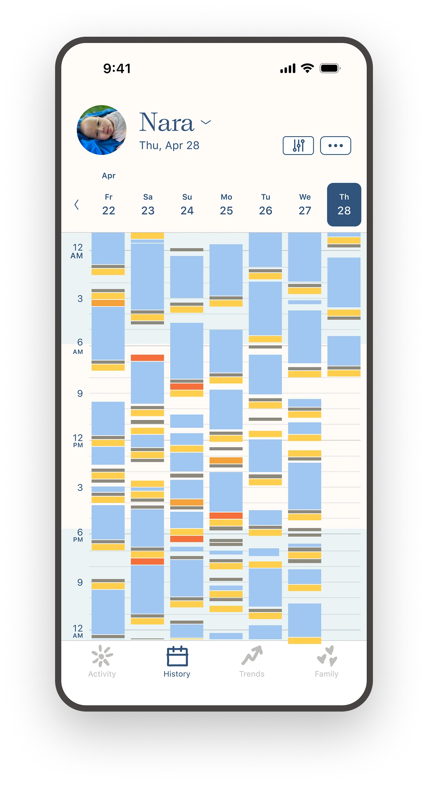
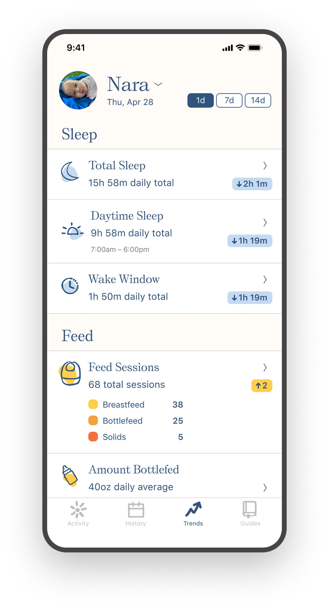
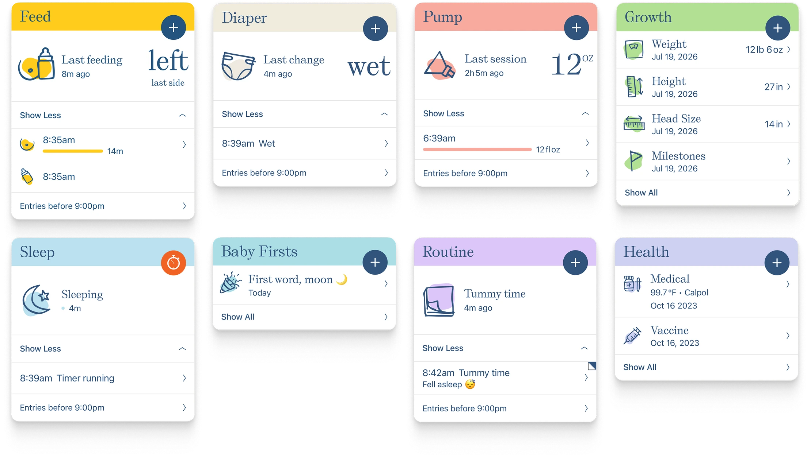
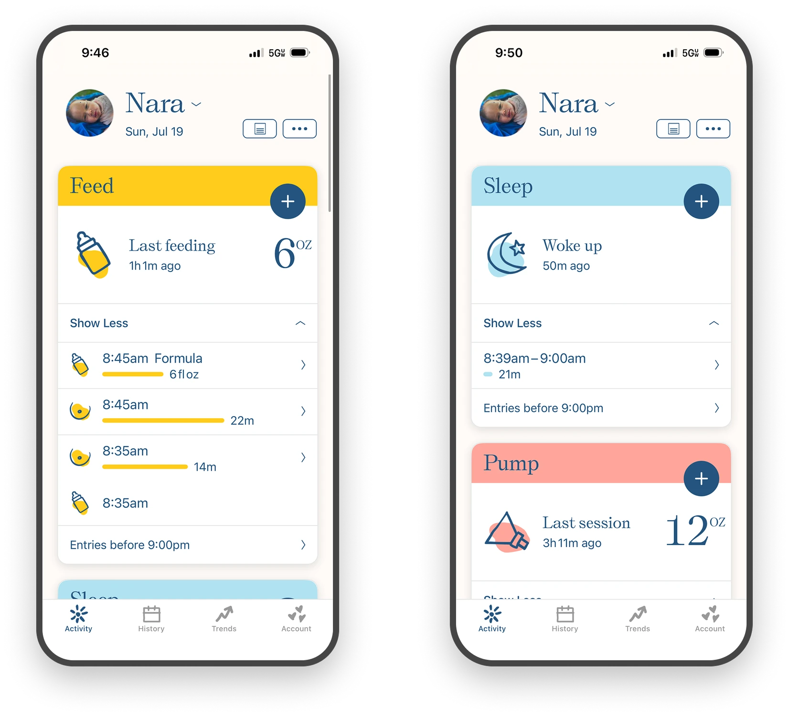
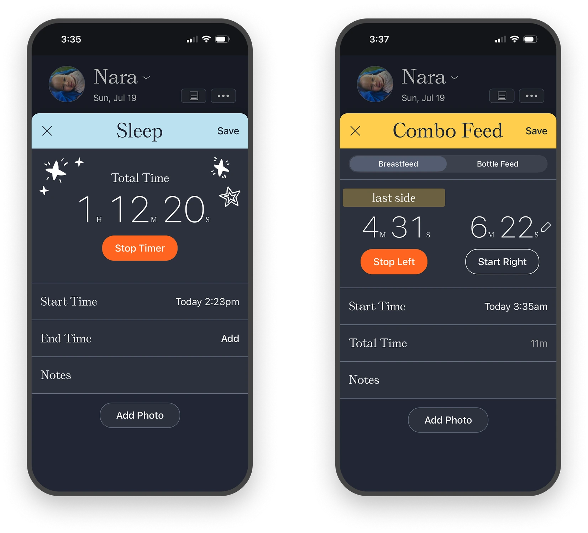
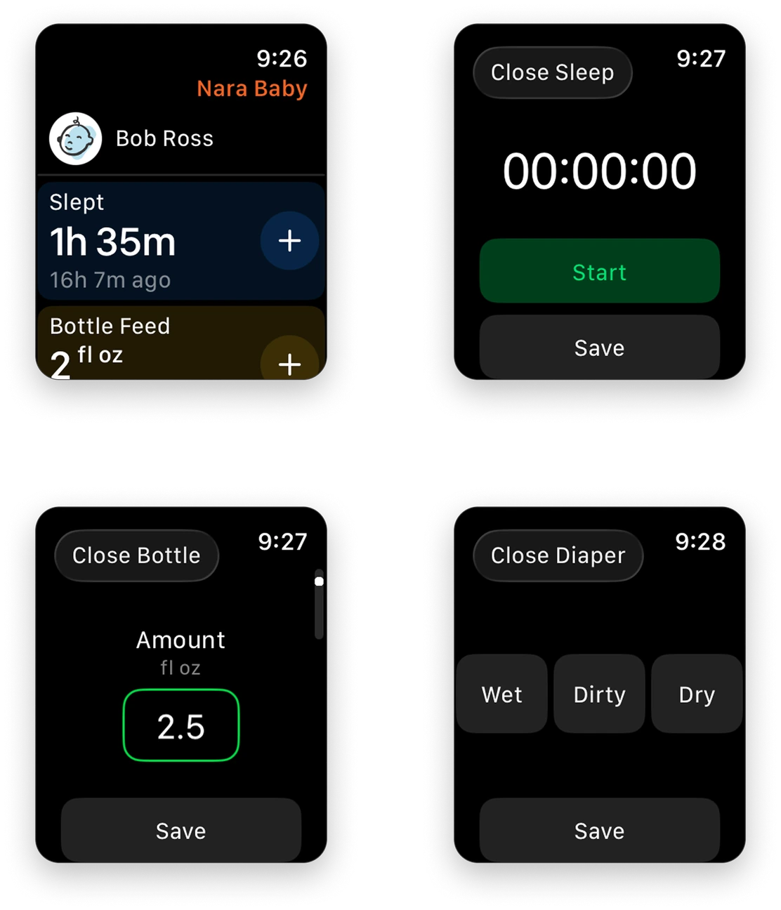
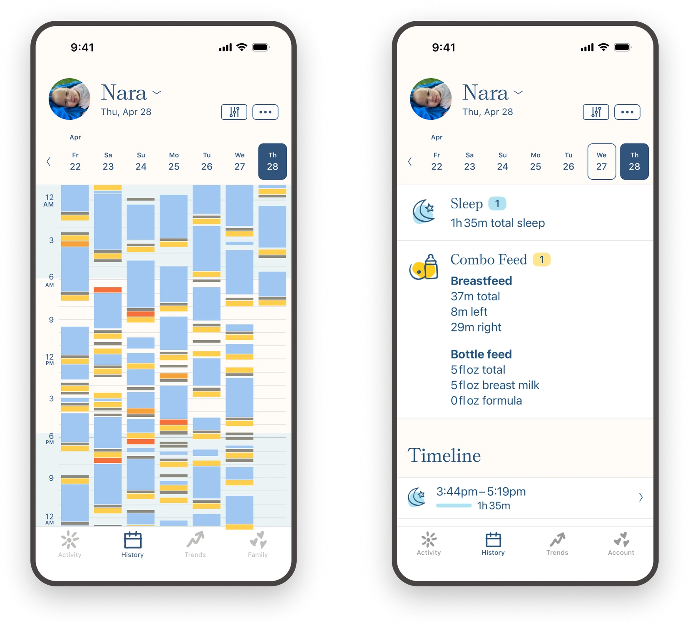
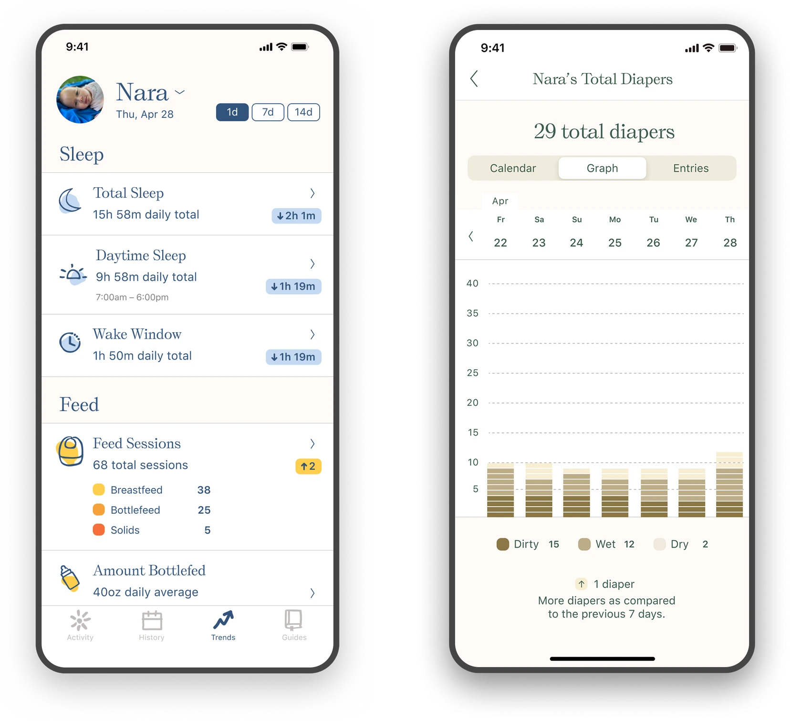
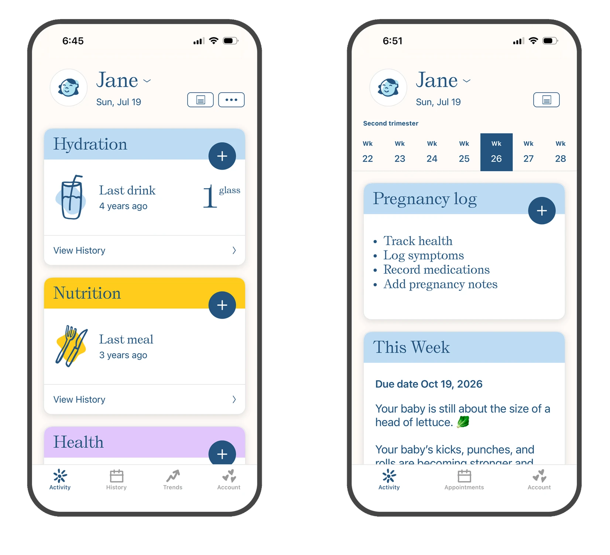

Nara
One baby tracker, personalized to each caregiver
Frustrated by the complexity of existing baby tracking apps, Nara's founder set out to build a simpler, more intuitive experience from the ground up. The challenge was designing a product that could organize everything parents wanted to track, without becoming overwhelming.
Over an eight year engagement I led Product Design for Nara, working directly with the CEO and engineering team. Every decision below started the same way: interviews, survey mining, App Store reviews, and inbound email. The product began as a baby tracker and took on postpartum, then pregnancy, without changing shape.
Oct 2018 – Jun 2026
Led UX & product design
1 million+
Parents
4.9
App store rating
23,000+
Parent reviews




Three tabs, one system: log an activity, see the whole day, ask a question of the week.
An interface you can read at a glance
What we learned in research
During discovery research, we discussed trackers that had been abandoned. Two complaints repeated: the one thing they opened the app to check, the last entry, was buried, and half the home screen was activities they didn't track. A fixed, universal layout gave every caregiver the same experience creating unnecessary scrolling, tapping and searching.
Design outcome
An uncluttered home screen of cards, one per activity, each showing its most recent entry in plain language, last feeding, 2h 10m ago, 6oz, and a single tap to add the next. The cards reorder, so a parent keeps what they track on top and pushes the rest down. Hiding is the same control turned off: what you don't track leaves the screen entirely, which came directly from parents writing in that seeing options they couldn't use was a daily reminder they didn't want. Onboarding hands over the arrangement rather than saving it for settings.

One card per activity, one system across all of them. Same anatomy, different data.
Whoever has the baby needs the log
What we learned in research
The earliest interviews surfaced this before anything else. Parents were coordinating care in shared paper notebooks because the apps of the day offered one login per household, which meant everyone shared a single interface. A partner, a grandparent, a night nurse, and a daycare all needed the same log live, but none of them needed the same screen.
Design outcome
A shared log where the data is common but the interface is personal. A night nurse doesn't need pumping on her home screen; a mother might want it first. So the account carries the data and nothing else, order and visibility live with each person, on each phone. Two caregivers open the same tracker to two different apps, both correct, and neither logs around somebody else's information architecture.

Same data, two home screens. Personalization is per person, not per account.
It's 3am and the room is dark
What we learned in research
Surveys and VIP parent interviews kept describing the same conditions: parents log in the dark, exhausted, and one-handed, with a baby they're holding. In that state, anything fiddly gets skipped.
Design outcome
An interface designed for the hardest moment it's used in. Buttons are oversized. Timers run on one tap. Fields carry forward from the last entry, because at 3am the last entry is usually a good guess at this one. Dark mode runs on its own schedule rather than the system setting, keyed to the baby's night hours: the phone thinks night starts at sunset, but for this user night is whenever the baby's night is, which is exactly when the app is used most.

Fields prefill from the last entry and timers start on one tap. Most logs are a tap and a dismiss.
The phone isn't always reachable
What we learned in research
Inbound CX asked for the same thing from a dozen directions: hands full, middle of the night, phone across the room or pinned under a sleeping baby. The pattern was clear: parents wanted to log without reaching for a phone at all, because unlocking it and finding the app was three obstacles in front of a two second task.
Design outcome
An Apple Watch app that takes the least possible input, with detail filled in later from the phone. The constraint was useful. A watch can't hold a sheet, so it forced the question of the minimum true entry for each activity. Those answers made the phone app better.

Every tracking category on the wrist, logged in one tap, with the detail filled in later from the phone.
Is this normal? Is it changing?
What we learned in research
Nara launched without trends, so parents built the workaround themselves, asking to export their data and running the analysis in spreadsheets, looking at naps across a 7-day window or ounces over a week. That wave of CSV requests, plus CX tickets asking for specific breakdowns, told us a trends surface was needed and named the exact questions it had to answer. We then surveyed users to prioritize.
Design outcome
Two surfaces, History for the chronological question, Trends for the crosswise one. To design Trends, we crossed what parents were asking for against what the structured data could actually support, then surveyed existing users to prioritize. History gives the full day, activity by activity, with a detail view per column showing totals and every entry with timestamps.

History view for the previous seven days, with a detail view showing totals and a full timeline.
Trends answers the questions parents had been exporting to spreadsheets to find, breast versus bottle, ounces per day, daytime naps against nighttime diapers, each opening into a calendar, a graph, and a list. Keeping them separate is what keeps each one legible; a single surface trying to do both is the clutter parents left other apps to escape.

Trends span every tracked area, with detail views showing the data as a calendar and a graph alongside all entries.
Extending to pregnancy and post-partum
What we learned in research
User research was conducted on both pregnancy and postpartum before design. For postpartum, a broad survey of existing users mapped what a recovering mother would actually want to track in postpartum. For pregnancy, user interviews plus a competitive landscape analysis set the position, not a full-feature pregnancy app like the ones already out there, but a focused version consistent with the rest of Nara. The finding both times: extend the card system UX, don't add a second product.
Design outcome
Postpartum and pregnancy inside the same card system, with a single new pattern to move between subjects. Postpartum tracks medicine, water, mood, journaling, and nutrition, all cards, reorderable and hideable like any others, with trends behind them, so a mother sees her own mood over weeks the way she sees the baby's sleep. What changed is that the app now has more than one subject, so the switch lives on the avatar at the top: two people and it toggles on a tap, more and it opens a sheet. Postpartum uses an illustration of the mother rather than a photo, keeping her presence in the app from depending on a picture she may not want to take right now. Pregnancy is offered in onboarding at two weeks before the due date, a number that came from usage data showing when planners were already setting the app up, and runs alongside baby mode for a second child, because it's the same switcher.

Postpartum and pregnancy extend the card based UI so the UX is cohesive across trackers.
Outcome
Trusted by over a million parents, Nara consistently ranks as a top-rated health and parenting app. But the clearest measure of a simple app is that users describe it back to you in the terms you designed for. Parents arrive at Nara after trying a better known app and calling it too complicated. They list the handful of things they wanted to track and say the app has those and nothing else. They name multi-caregiver sharing unprompted, over and over.
Nobody says personalization. They say the app has exactly their things on it, which is what personalization is when it works, it disappears, and the parent believes the app was made for them.